The human body contains eleven (11) major organ systems, but first we must know the anatomy of the organ system, which are THE LEVELS OF ORGANISATION, they are;
The Cell
The cell is the basic functional unit of life. They existed from pre-existing cells and they contain necessary data of mankind. Cells was discovered in the 1860s by Robert Hooke and other scientists who also contributed in the discovery of the cell. Today, cytologists - scientists that study the anatomy and physiology of a cell - has given us a clear picture of the cell and its charactistics in a global level, which are the attributes every living organism carry out. You can take good look at the anatomy of the cell in the diagrams below.

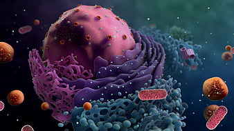
The Tissue
The tissue is a group of similar cells that perform a single function. A single cell cannot carry out a particular task on its own except, it pairs up with other cells, i.e becoming a tissue, to achieve a common task, example, blood vessels in the transport system of the human body. Types of tissues in the human body include; Epithelial tissues, Nerve tissues, Connective tissues and Muscle tissues. You can observe them in the diagram below.
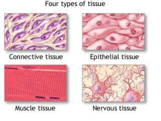
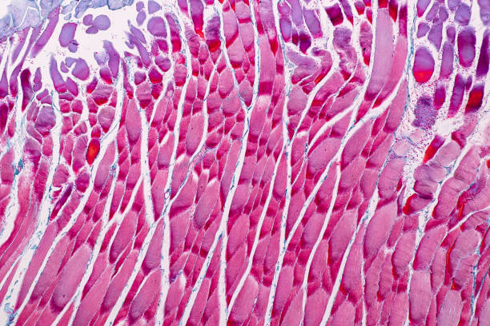
The Organ
The organ is a group of tissues that work together to perform a single function. Also some single tissues cannot achieve a task without pairing up to form an organ - for example, the heart - in order to achieve a common task.
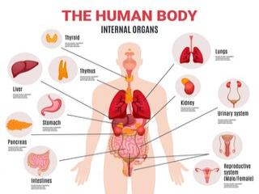
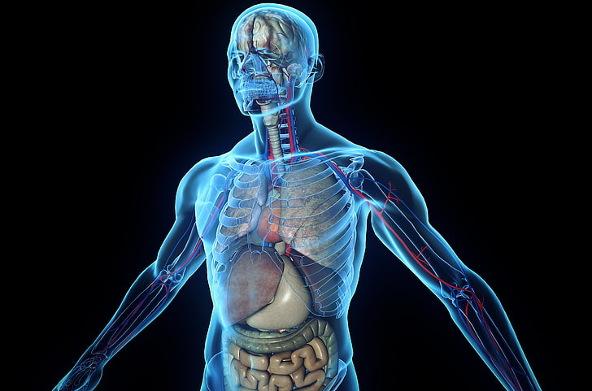
WHAT IS AN ORGAN SYSTEM ?
An organ system is a collection of organs, pairing together to achieve a single function, for example, the digestive system [liver, pancreas, etc], the nervous system [brain, vertebral column, etc] and so on. Now the eleven organ systems are listed below :
THE SKELETAL SYSTEM
The skeletal system suports and protects the body. It is the body's framework which consists of more than 208 bones of three kinds, which are, cuticle, cartilage and bone. There are three types of skeletons, they are; exoskeleton (external skelton), endoskeleton (internal skeleton) and the hydrostatic skeleton. The human skeleton which is an internal skeleton supports and protects the body, making it easy for humans and other animals that possesses such skeleton to move.
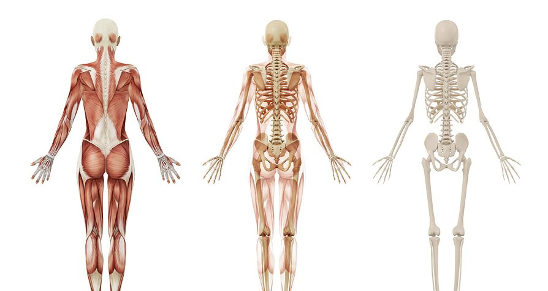
THE MUSCULAR SYSTEM
The muscular system also supports and contributes to the movement of the body. The human muscular system is made up of 650 muscles in the body. The muscles in our body are made of tissues called muscle tissues
, which provides for movement. Muscle tissues are made from muscle cell,which are the motors of the vertebrate body. The characteristics that makes them unique is the relative abundance and organization of actin(thin filament)and myosin(thick filament) filaments within them.
*The diagrams are below
Although these filaments form a fine network in all eukaryotic cells, where they contribute to cellular movements, they are specialized for contraction. Vertebrates possess three kinds of muscles, which are;
- smooth muscle
- skeletal muscle, also known as striated muscle
- cardiac muscle
*For more details, Click here


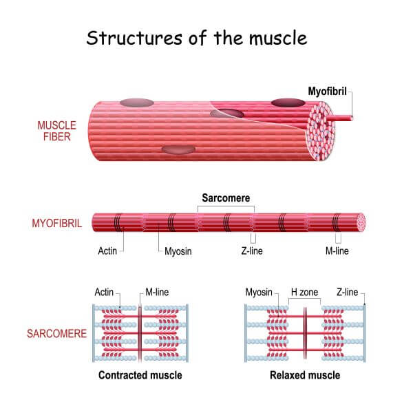
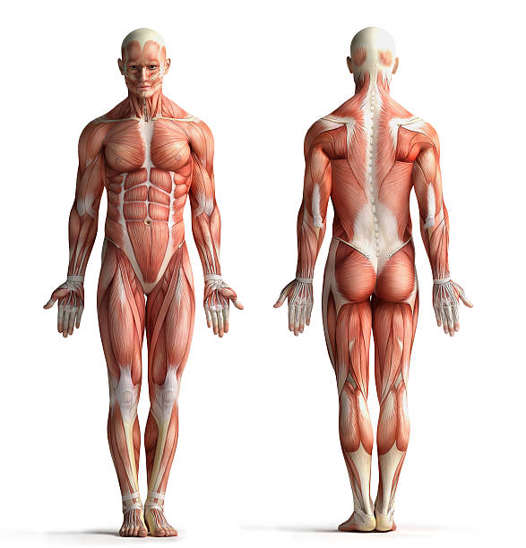
THE DIGESTIVE SYSTEM
The digestive system is a very unique system in the human body, it is the organ system that processes food and aborsbs it into a more benefiting material for the body to used to keep the body fit and healthy. For more details about the digestive system, go to our homepage for more or click the link below;
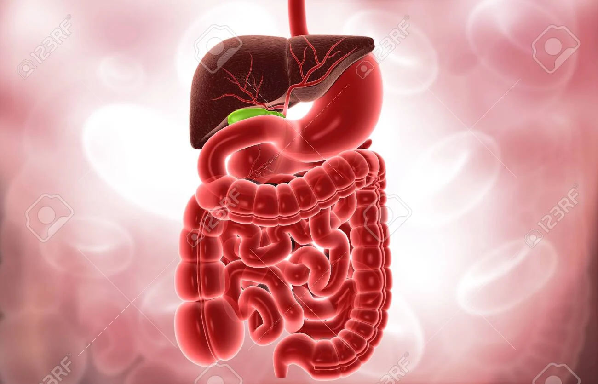
THE EXCRETORY SYSTEM
Excretion is the act accumulating and disposing metabolic waste from an act of metabolism, out of a body of a living organism. The excretory system is also another unique organ system in the human body, its objectives are simple, it makes sure that waste products from metabolism or digestion are properly disposed from the body and it also regulates osmotic pressure through an organ called the KIDNEYwhich is the main organ of the excretory system. The kidney also gets rid of metabolic wastes like, urea etc. Without the kidney, the body cannot get rid of waste products, conduct osmotic pressure in the body and so on, without it, it can cause a very deverstating problem to the body. The skin is also an excretory organ because it contains sweat glands and lipids that contribute to the excreting of sweats, which it's main component is salt, and other metabolic waste from the body. To know more about the skin, scroll down to read the integrumentary system
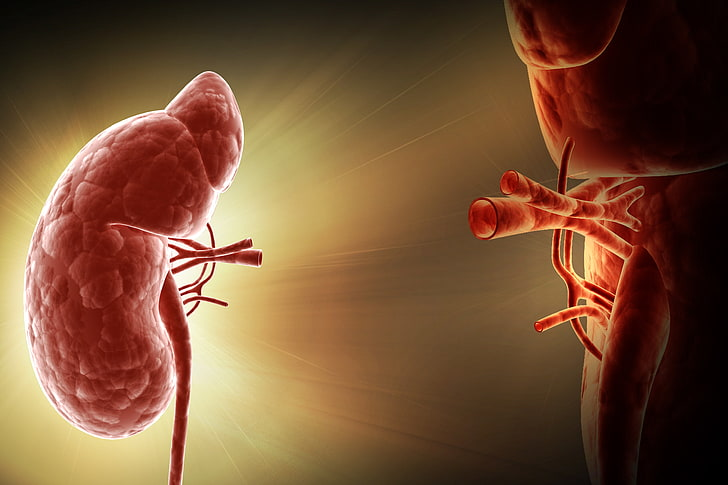
THE IMMUNE SYSTEM
This is the most important system in the human body, the immune system fights off diseases from entering the body. If you want to know about this organ system, you can go to our homepage and click on the next journal, or you can just click on this link below.
>Click here for more details on the immune system <
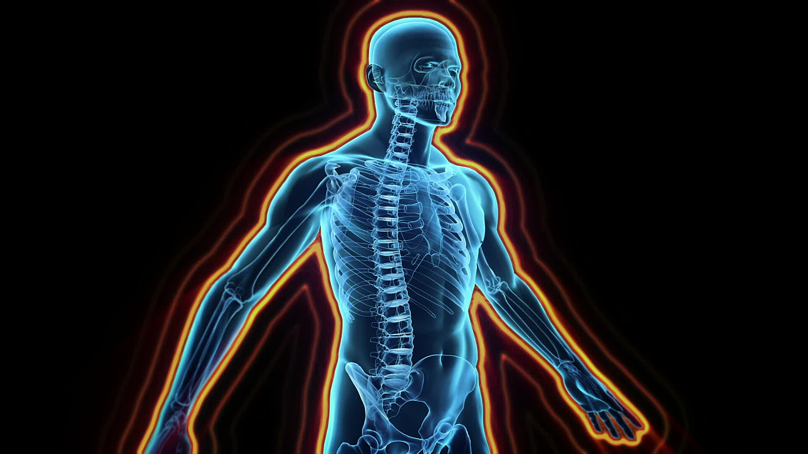
THE NERVOUS SYSTEM
A computer can deliver a page of text, graphics and even a video in a few seconds. However, there is another machine
less than a meter away from a computer that can perform equally astonishing feats. In a fraction of a second, this machine can take everything on a computer screen; monitor the sound, light and the heat in the room; and many more. What kind of information-procesing system can do all this ? The answer is inside you - the human nervous system.
To understand the nervous system, you should start from the basics, like the computer, you start with the electricity, wires and switches. Gradually, you see how thousands of indivdual components are wired together to form a functional unit. The basic unit of the nervous system are cells called neurons
, a group of these cells (neurons) are called a nerve which is a tissue - to know more, see levels of organisation. These cells carry messages in the form of electrical signals known as impulses. A neuron is made up of a cell body, dentrites and an axon. The largest part of the neuron is its body. Most of the metabolic activity of the cell takes place there. In addition, the cell body collects information from the dentrites - small branched extensions that spread out from the cell body. Dentrites carry impulses towards the cell body. And the long branch that carries impulses away from the cell body is called the axon
.Note: A neuron may have many dentrites, but it usually has only one axon.
There are three general types of neurons, distinguished by the direction in which they carry impulses. The sensory neurons carry impulses from the sense organs to the brain and spinal cord. The motor neurons carry impulses in the opposite direction - from the brain and spinal cord to the muscles and other organs. The interneurons connect sensory and motor neurons, and carry impulses between them, (similar to the circulatory system: artery, vein and calpillary). For more details about the nrvous system and its organisation, VISIT.
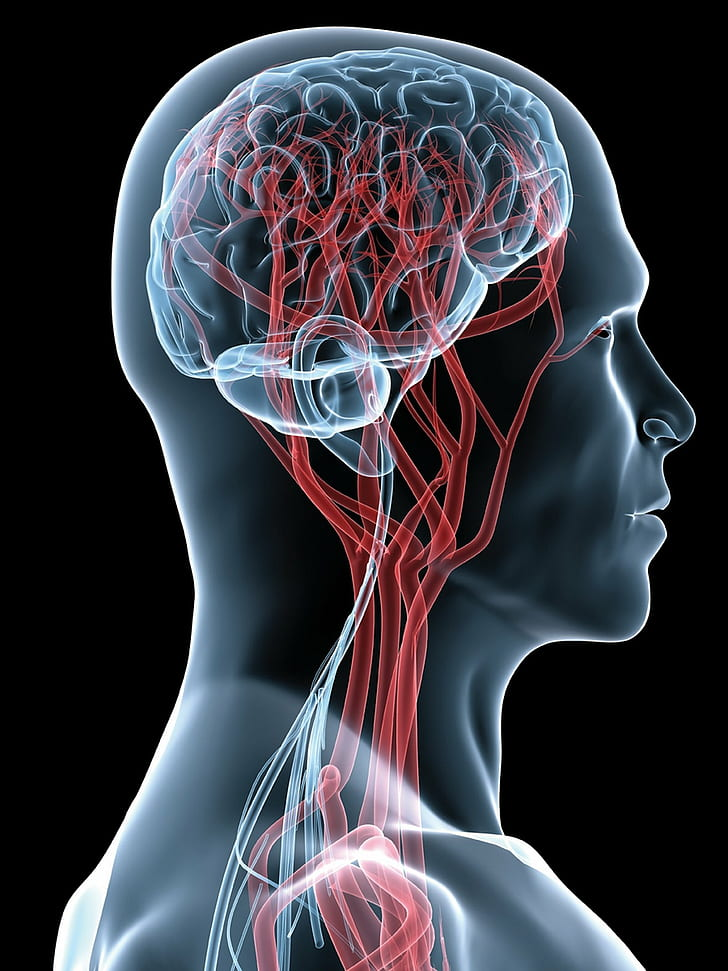
THE INTEGUMENTARY SYSTEM
When you look at yourself in the mirror, what do you notice first ?
Maybe you notice your hair or your skin. Did you know that one system of the body system is responsible for the shade of your skin, your hair and even your nails ?
The body system is the integumentary sytem, which acts like a protective covering for the rest of your body.
The skin, which is the largest organ of the body, is part of the integumentery system, followed by the hair, nails and a number of glands in the skin. The skin regulates body temperature, it protects the body from diseases and so on. The skin itself is made up of two layers, which are;
Epidermis
The epidermis is made up of layers of epithelial cells. Deep in the epidermis these cells grow and divide rapidly, producing new cells that are gradually pushed forward to the surface of the skin. As they move upward, the cells begin making keratin
, a tough flexible protein. In humans keratin is the major protein found in hair and fingernails. As they near the surface, these cells die, but the keratin within remains, forming a tough, waterproof layer on the surface of the skin. As you work, walk and bathe you washn and scrape off millions of these dead cells everyday. But don't worry, your skin produces more than enough new cells to take their place.
Cells that produce pigments, called melanocytes
, are found in the epidermis. They contain granules of melanin
, a dark-brown pigment that gives the skin its color. Most people have the same number of melanocytes in their skin, but dark-skinned people produce more melanin than people with light skin.
Dermis
The dermis supports the epidermis and contains cells such as nerve endings, blood vessels and smooth muscles. When you feel something by touching it with your fingers, touch receptors in your dermis are picking up the sensation.
The dermis reacts to the body's needs in a number of ways. For example, on cold days - when you conserve heat - blood vessels in the dermis narrow, limiting the loss of heat. When the body is hot, the same vessels widen, bringing more blood to the skin. This warms the skin, causing the loss of heat.
The dermis also contains two types of glands, which are; the sweat glands
and the sebaceous glands
. Sweat glands produce a watery secretion that contains ammonia, salt and other compounds. These glands are controlled by the nervous system, which activates them to cool the body when it gets too hot. Sebaceous glands produce an oily secretion that help keeps the epidermis flexible and waterproof.
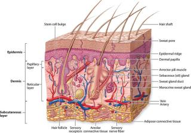
Hair and Nails
Hair produced from columns of cells that are filled with keratin and then die. Clusters of such cells make up hair follicles, which are anchored in the dermis. Cells multiply in the base of the follicle, causing the hair to grow longer.
Toenails and fingernails are formed in almost the same way, except that the keratin-forming cells in those tissues form a flattened plate. Nails cover and protect the tips of your fingers and toes.
THE CIRCULATORY SYSTEM
The circulatory system can also be called the Transport System
. Its brings oxygen, chemical components and so on around the body. The system has the bigest tissue, which is the blood which is a liquid tissue that comparises of cells, proteins and enzymes, such as;the red blood cells, white blood cells, platelets and so on.
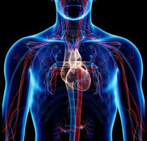
THE RESPIRATORY SYSTEM
The respiratory system is another unique organ system that is very vital to the rest of the organ system. It brings oxygen to the body which is a very vital chemical componet in the body.
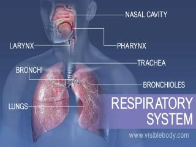
THE ENDOCRINE SYSTEM
Imagine the endocrine system as a chemical broadcasting
system that send messages to millions of cells at the same time. This system play an important to other parts of the body, it helps to regulate and control the body organ systems. Infact, the endocrine system is made up of a series of glands - organs that produce and release chemicals - located throughout the body. Endocrine glands generally release these chemicals (hormones) into the bloodstream. Unlike the organs of the nervous system, the endocrine are not connected to one another. The endocrine glands send signals between each other and to other cels in the body. These signals are produced by the endocrine glands in the form of hormones
- chemicals that acts as a message or information and travels through the bloodstream, affecting the behaviors of other cells.
These are some hormones, the glands which they were made from and their actions;
.png "Hormones And Their Actions")
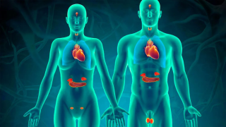
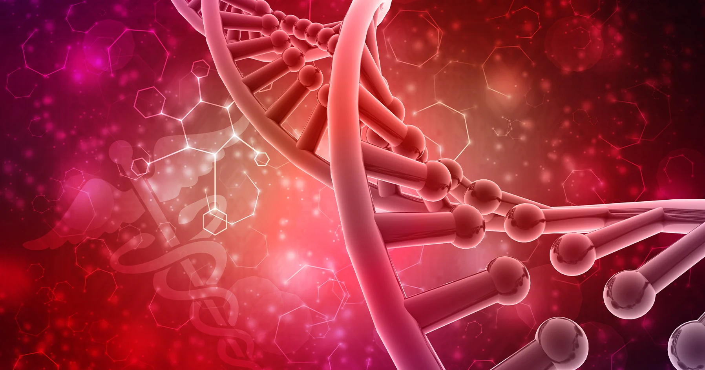
THE REPRODUCTIVE SYSTEM
This is a system which is paired by a group of cells, called sex cells or gametes. The system plays a huge role in the aspect of the life, I means, giving birth to young or the continunity of life.
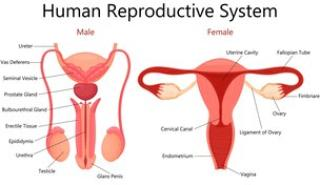